NSCA KOREA 스포츠 영양코치 · 레벨 1 개념 연습
킹콩 입문
스포츠 영양코치
레벨1 100제
깨부 — 깨지고 부서져라
교재·기출 복사 없이, 개념을 원류까지 추적해 문제를 새로 썼습니다
![킹콩]()
50문제 선공개6영역 고르게2025 섭취기준 반영문제마다 근거답 가리기
마크삼식(킹콩) · NSCA KOREA 공식 자료 아님 · 공개 자료·연구 원문 기반킹콩 MarkSS
🦍
킹콩 입문 · 스포츠 영양코치 레벨1 100제
깨부 — 깨지고 부서져라 · 시험 전에 미리 깨져 보는 스포츠영양 개념
마크삼식(킹콩)
NSCA KOREA 공식 자료 아님
NSCA KOREA 공식 자료 아님
이렇게 보세요 스포츠 영양코치 공부를 시작하기 전에 개념을 미리 만나 깨지고 부서져 보는 문제예요. 전체 100문제 중 50문제를 먼저 공개해요. 오른쪽 위 🙈 답 가리기를 누르고 먼저 풀어 본 다음, 정답·해설·⚠️ 함정으로 맞춰 보고 ☐☐☐에 체크해요. 문제마다 근거 등급을 붙였어요 — ✅ 공식·1차 자료 근거 · 🔶 2차 자료·교과서 관행 · ⚠️ 자료끼리 다름(해설에 두 값). 기준마다 다른 숫자(2016 공동 입장문 · ISSN · IOC · 한국인 영양소 섭취기준 2020/2025)는 해설에 함께 적었어요. 시험은 과정 교재 표현을 따를 수 있으니 교재 값도 꼭 확인하세요.
📋 시험 한눈에 NSCA KOREA 스포츠 영양코치(SNC) 레벨 1(입문): 100문항 · 4지선다 · 고졸 이상 응시 · 100점 환산 70점 이상 합격(온라인 교육 수강자 65점 이상) · 등록하면 응시 2번(첫 응시 + 재응시) ✅
상급(Advanced) 레벨 2는 120문항 5지선다 · 시험지 공개·답안 확인 불가 · 출제 영역 비율은 공개되지 않음 — 이 100제는 공개된 스포츠영양 1차 자료(ACSM·AND·DC 2016 공동 입장문 · ISSN 입장문 · IOC 합의문 · 2025 한국인 영양소 섭취기준)로 6영역을 고르게 짰어요 · 기준일 2026-11-13(NSCA KOREA 누리집)
상급(Advanced) 레벨 2는 120문항 5지선다 · 시험지 공개·답안 확인 불가 · 출제 영역 비율은 공개되지 않음 — 이 100제는 공개된 스포츠영양 1차 자료(ACSM·AND·DC 2016 공동 입장문 · ISSN 입장문 · IOC 합의문 · 2025 한국인 영양소 섭취기준)로 6영역을 고르게 짰어요 · 기준일 2026-11-13(NSCA KOREA 누리집)
A에너지와 체성분8문제 공개 / 15 · 열량 · 에너지 시스템 · 기초대사량 · 에너지 가용성 · 체성분
A02에너지와 체성분✅ 공식·1차 자료 근거☐☐☐
탄수화물 40 g, 단백질 20 g, 지방 10 g이 든 간식의 열량을 일반 Atwater 계수로 계산하면 약 얼마인가?
- ①280 kcal
- ②310 kcal
- ③330 kcal
- ④390 kcal
정답 ③
일반 Atwater 계수는 탄수화물·단백질 4 kcal/g, 지방 9 kcal/g이므로 (40 × 4) + (20 × 4) + (10 × 9) = 160 + 80 + 90 = 330 kcal이다.
🚫 오답 보기
- ①지방까지 1 g당 4 kcal로 계산한 값이다 — 지방은 1 g당 9 kcal이다.
- ②지방에 알코올 계수(7 kcal/g)를 쓴 값이다 — 지방은 9 kcal/g이다.
- ④단백질에 알코올 계수(7 kcal/g)를 쓴 값이다 — 단백질은 4 kcal/g이다.
⚠️ 함정 4·4·9·7에서 7은 알코올 계수이다 — 단백질이나 지방에 7을 곱하지 않는다.
근거 ✅ FAO 2003, Food energy – methods of analysis and conversion factors, Ch.3 원문
A04에너지와 체성분✅ 공식·1차 자료 근거☐☐☐
브룩스(Brooks)의 크로스오버 개념에 따른 운동 중 연료 사용 변화로 옳은 것은?
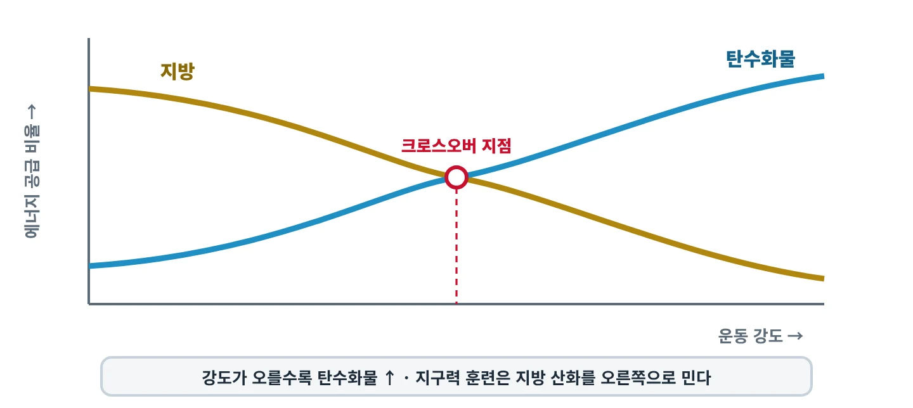
운동 강도와 연료(크로스오버 개념)
- ①운동 강도가 오를수록 지방 사용 비율이 커지고, 지구력 훈련은 연료 사용을 탄수화물 쪽으로 옮긴다
- ②지구력 훈련을 하면 같은 강도에서 지방보다 탄수화물에 더 의존하게 된다
- ③연료 비율은 운동 강도·훈련 상태와 관계없이 그날 먹은 식사로만 정해진다
- ④운동 강도가 오를수록 탄수화물 사용 비율이 커지고, 지구력 훈련은 연료 사용을 지방 산화 쪽으로 옮긴다
정답 ④
크로스오버 개념에서 운동 강도는 탄수화물 사용 쪽으로, 지구력 훈련은 지방 산화 쪽으로 밀며, 어느 순간의 연료 비율은 두 힘이 맞선 결과이다. 탄수화물 유래 에너지가 지방 유래 에너지보다 우세해지기 시작하는 강도가 크로스오버 지점이다.
🚫 오답 보기
- ①두 방향이 모두 거꾸로이다 — 강도가 오르면 탄수화물이, 지구력 훈련은 지방 산화 쪽이 커진다.
- ②지구력 훈련은 지방 산화 쪽으로 미는 힘이다.
- ③크로스오버 개념에서 연료 비율은 운동 강도와 훈련 상태라는 두 힘의 상호작용 결과이다.
⚠️ 함정 지방의 「비율」은 저강도에서 가장 높지만 지방 산화의 「절대량(g/min)」은 중강도에서 가장 크다 — 둘을 섞지 않는다.
A06에너지와 체성분✅ 공식·1차 자료 근거☐☐☐
제지방량 하나만으로 기초대사량을 추정하므로 근육량이 많은 선수에게 쓰기 좋은 추정식은?
- ①Mifflin-St Jeor 식
- ②Harris-Benedict 식
- ③Cunningham 식
- ④신체활동수준(PAL) 공식
정답 ③
Cunningham 식은 Harris-Benedict 자료를 다시 분석해 제지방량만이 기초대사량의 유의한 예측인자임을 보인 연구에서 나왔고(1980년판 500 + 22 × 제지방량, 1991년판 370 + 21.6 × 제지방량(🔶 2차 자료)으로 두 판본이 있다), 2016 공동 입장문은 선수의 기초대사량을 Cunningham 식이나 Harris-Benedict 식으로 합리적으로 추정할 수 있다고 했다.
🚫 오답 보기
- ①체중·키·나이·성별을 넣는 식이다 — 제지방량을 쓰지 않는다.
- ②체중·키·나이·성별을 넣는 식이다 — 제지방량을 쓰지 않는다.
- ④PAL은 총에너지소비량 ÷ 기초대사량으로 구하는 활동 수준이며 기초대사량 추정식이 아니다.
⚠️ 함정 Cunningham 식은 판본마다 상수가 달라(1980·1991) 계수 숫자로 답을 고르지 않는다 — 「제지방량 기반」이라는 점이 핵심이다. Mifflin-St Jeor 식을 발표한 원 논문에도 제지방량 단독 회귀식이 있지만, 「Mifflin-St Jeor 식」이라 하면 체중·키·나이·성별을 넣는 식을 가리킨다.
A07에너지와 체성분✅ 공식·1차 자료 근거☐☐☐
체중 60 kg인 사람이 8 MET 활동을 30분 동안 했을 때 소비한 에너지의 대략적인 값은?
- ①약 480 kcal
- ②약 240 kcal
- ③약 840 kcal
- ④약 1,680 kcal
정답 ②
1 MET는 안정 시 산소 섭취량 3.5 mL/kg/min이며 약 1 kcal/kg/h에 해당하므로 8 × 60 kg × 0.5시간 ≈ 240 kcal이다.
🚫 오답 보기
- ①30분을 1시간으로 계산한 값이다.
- ③1 MET를 1 kcal가 아니라 3.5 kcal/kg/h로 잘못 본 값이다 — 3.5는 산소 섭취량(mL/kg/min)의 숫자이다.
- ④1 MET를 3.5 kcal/kg/h로 잘못 보고 30분까지 1시간으로 계산한 값이다.
⚠️ 함정 1 MET = 3.5 mL O₂/kg/min ≈ 1 kcal/kg/h — 「3.5 kcal」로 외우면 값이 3.5배로 커진다.
근거 ✅ Herrmann SD 외 (2024) 2024 Adult Compendium of Physical Activities, J Sport Health Sci 원문
A08에너지와 체성분✅ 공식·1차 자료 근거☐☐☐
신체활동수준(PAL)에 대한 설명으로 옳은 것은?
- ①기초대사량에서 운동 에너지 소비를 뺀 값이다
- ②FAO/WHO/UNU(2004)는 PAL 3.0 이상도 장기간 쉽게 유지할 수 있다고 보았다
- ③PAL 값이 클수록 활동량이 적은 좌업 생활을 뜻한다
- ④24시간 총에너지소비량을 기초대사량으로 나눈 값으로, 기초대사량에 곱해 총에너지소비량을 추정하는 데 쓴다
정답 ④
PAL은 24시간 총에너지소비량 ÷ 기초대사량이며, 2016 공동 입장문도 기초대사량에 알맞은 활동계수를 곱해 총에너지소비량을 추정하도록 했다. FAO/WHO/UNU(2004)는 좌업·가벼운 활동 1.40~1.69, 활동적 1.70~1.99, 격렬 2.00~2.40으로 나눈다.
🚫 오답 보기
- ①PAL은 빼기가 아니라 나누기로 구하는 비율이다(총에너지소비량 ÷ 기초대사량).
- ②FAO/WHO/UNU(2004)는 PAL 2.40을 넘는 수준은 장기간 유지하기 어렵다고 했다.
- ③거꾸로이다 — PAL이 클수록 활동량이 많다(좌업·가벼운 활동은 1.40~1.69).
⚠️ 함정 한국 에너지필요추정량의 신체활동단계(저활동적 1.40~1.59 · 활동적 1.60~1.89 · 매우 활동적 1.90~2.50)는 FAO 구간과 경계가 달라 구간 숫자로 답을 가리지 않는다.
A10심화에너지와 체성분✅ 공식·1차 자료 근거☐☐☐
IOC 2023 REDs 합의문이 에너지 가용성 30 kcal/kg FFM/일을 보는 관점으로 옳은 것은?
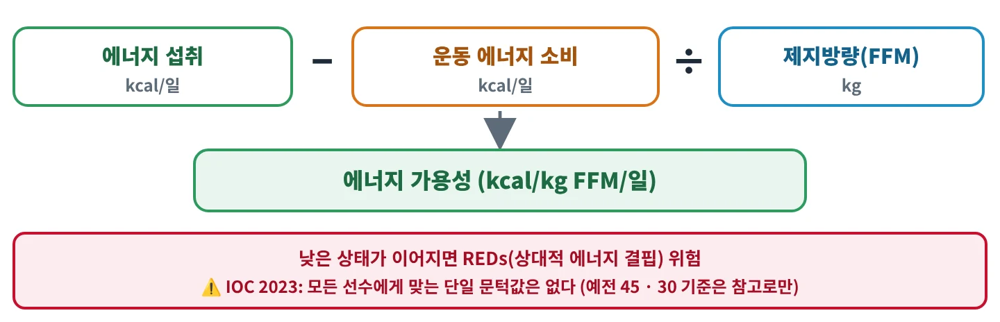
에너지 가용성 계산
- ①좌업 여성의 단기 실험에서 나온 안내용 값이며, 모든 선수에게 적용할 진단 기준점은 아니다
- ②남녀 모든 선수에게 똑같이 적용하는 REDs 진단 기준점이다
- ③남성은 여성보다 높은 값 아래에서부터 문제가 생기므로 남성 기준을 더 높게 잡는다
- ④45 kcal/kg FFM/일 이상이면 REDs가 생기지 않는다는 보편 임상 기준을 함께 제시한다
정답 ①
IOC 2023은 30 kcal/kg FFM/일을 좌업 여성 단기 실험에서 나온 「진단 기준점이 아닌 안내용」 값으로 보고, 남성은 약 9~25 kcal/kg FFM/일로 더 낮은 듯하다고 했다. 반면 2016 공동 입장문은 45를 에너지 균형·최적 건강, 만성적으로 30 미만을 신체 기능 손상과 연관 지었다(교재가 이 고정 기준을 쓸 수 있음).
🚫 오답 보기
- ②IOC 2023은 단일 보편 문턱을 정하는 데 위험이 있다고 밝히고 이 값을 진단 기준점으로 쓰지 않는다.
- ③IOC 2023은 남성의 문턱은 덜 알려졌지만 더 낮은 듯하다(약 9~25 kcal/kg FFM/일)고 보았다.
- ④IOC 2023은 45를 초기 여성 연구의 체중 유지 구간 경계로만 언급했고 보편 임상 기준으로 지지하지 않았다.
⚠️ 함정 교재의 「45 최적 · 30 미만 위험」은 2016 공동 입장문 기준이고, IOC 2023은 이를 보편 문턱으로 보지 않는다 — 어느 기준을 묻는지 먼저 본다.
A13에너지와 체성분✅ 공식·1차 자료 근거☐☐☐
체성분 측정법과 그 특징의 짝으로 옳지 않은 것은?
- ①생체전기저항분석(BIA) — 빠르고 저렴하지만 집단 특이적이어서 대상에 맞는 식을 써야 한다
- ②피부두겹법 — 장비가 비싸고 방사선 노출이 있어 현장에서 쓰기 어렵다
- ③수중체중법 — 완전 호기·잠수 수행과 잔기량 추정 오차에 결과가 좌우된다
- ④공기치환법(BOD POD) — 빠르고 신뢰도가 높지만 장비가 비싸다
정답 ②
피부두겹법은 편리하고 저렴하며 방사선이 없지만, 측정자 숙련도에 신뢰도가 좌우되고 추정 표준오차가 크다. 방사선 노출은 DXA의 제약이다.
🚫 오답 보기
- ①ISSN 2017이 적은 BIA의 특징과 맞는다.
- ③ISSN 2017이 적은 수중체중법의 한계와 맞는다.
- ④ISSN 2017이 적은 공기치환법의 특징과 맞는다.
⚠️ 함정 「피부두겹 = 싸고 편하지만 측정자 의존 · 오차 큼」, 「DXA = 정확하지만 방사선 · 비용」으로 묶어 기억한다.
A14에너지와 체성분✅ 공식·1차 자료 근거☐☐☐
선수의 체성분을 반복 측정해 변화를 볼 때 권장되는 방법으로 옳은 것은?
- ①같은 장비·같은 프로토콜·같은 측정자로, 공복과 수분 상태를 맞춰 측정한다
- ②측정할 때마다 다른 방법으로 재서 평균을 낸다
- ③수분 상태와 관계없이 훈련 직후 편한 시간에 잰다
- ④목표 체지방률은 범위가 아니라 하나의 정확한 숫자로 정한다
정답 ①
2016 공동 입장문은 같은 장비·같은 프로토콜·같은 측정자로, 훈련량·공복·수분 상태를 맞춰 반복 측정하고 목표는 단일 값이 아닌 범위로 정하라고 했다.
🚫 오답 보기
- ②방법이 바뀌면 오차의 방향과 크기가 달라져 변화를 비교할 수 없다.
- ③수분·훈련 상태가 결과를 바꾸므로 측정 조건을 맞춰야 한다.
- ④2016 공동 입장문은 목표를 단일 값이 아닌 범위로 정하라고 했다.
⚠️ 함정 어떤 측정법도 보편적인 gold standard가 아니므로 「정확한 방법」보다 「같은 조건의 반복」이 변화 추적의 핵심이다.
🔒 에너지와 체성분 나머지 7문제는 출간본에 담아요
B탄수화물과 지방10문제 공개 / 20 · g/kg · 카보로딩 · 운동 중 g/h · 회복 · 지방 비율
B03탄수화물과 지방✅ 공식·1차 자료 근거☐☐☐
2016 공동 입장문의 훈련량별 하루 탄수화물 권고에 대한 설명으로 옳은 것은?
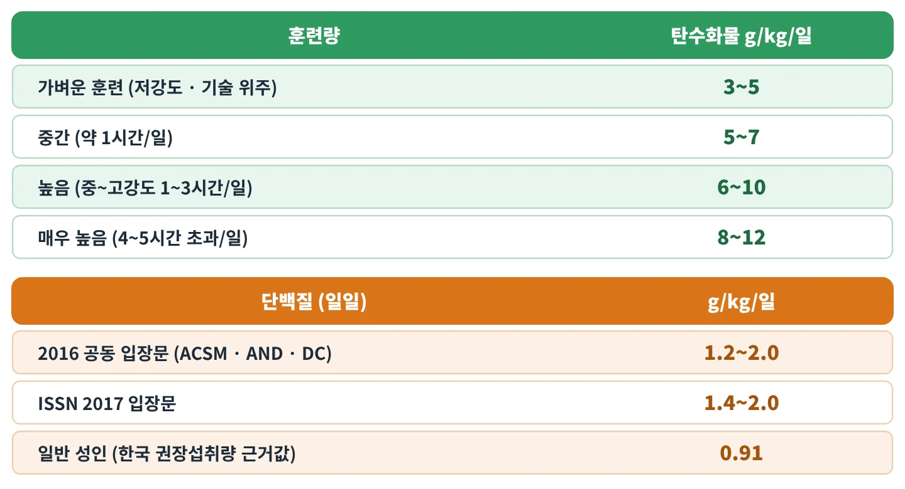
훈련량별 탄수화물 · 기준별 단백질
- ①훈련량과 관계없이 모든 선수에게 같은 양을 권한다
- ②저강도·기술 위주 훈련의 권고량이 8~12 g/kg/일로 가장 많다
- ③하루 권고량을 총에너지 대비 비율(%)로만 제시한다
- ④훈련량이 많을수록 권고 범위가 높아져, 하루 4~5시간 넘는 중~고강도 훈련은 8~12 g/kg/일이다
정답 ④
공동 입장문은 훈련량에 따라 3~5 → 5~7 → 6~10 → 8~12 g/kg/일로 권고를 높여 체중당 양으로 제시한다. ⚠️ ISSN(2017) 영양 타이밍 입장문은 같은 8~12 g/kg/일을 「글리코겐 저장을 최대화하는 고탄수화물 식사」라는 맥락으로 쓴다.
🚫 오답 보기
- ①영양 필요량은 고정되지 않고 훈련량과 훈련 주기에 따라 달라진다(주기화).
- ②저강도·기술 위주 훈련은 3~5 g/kg/일로 가장 적다.
- ③공동 입장문은 탄수화물 권고를 체중 1 kg당 g(g/kg/일)으로 제시한다.
⚠️ 함정 같은 「8~12 g/kg/일」이 공동 입장문에서는 「매우 많은 훈련량」 칸, ISSN에서는 「글리코겐 최대화 식사」 값이다.
B06탄수화물과 지방✅ 공식·1차 자료 근거☐☐☐
탄수화물 부하(글리코겐 초과보상)에 대한 설명으로 옳은 것은?
- ①초과보상을 얻으려면 반드시 며칠간의 저탄수화물 고갈 단계를 먼저 거쳐야 한다
- ②경기 시간과 관계없이 모든 경기 전에 권한다
- ③훈련된 선수는 훈련을 줄이면서(테이퍼) 고탄수화물 식사를 약 48시간 이어 가는 것으로도 초과보상을 얻을 수 있다
- ④1일 프로토콜 연구에서는 하루 동안의 고탄수화물 섭취로 근글리코겐이 늘지 않았다
정답 ③
2016 공동 입장문은 적어도 훈련된 선수라면 테이퍼와 고탄수화물 식사 약 48시간으로 초과보상을 얻을 수 있다고 보며, 고갈 단계를 요구하지 않는다. 고전적인 카보로딩 연구도 고갈형(고전법)과 중간 수준의 조작(변형법)이 비슷한 근글리코겐에 도달함을 보였다.
🚫 오답 보기
- ①고전적인 카보로딩 연구에서 고갈형과 변형형의 운동 전 근글리코겐이 비슷했고(207 vs 203), 공동 입장문도 고갈 단계를 요구하지 않는다.
- ②탄수화물 부하는 90분 넘는 경기 대비 전략이며, 20.9 km 달리기 연구에서는 기록 이득이 없었다.
- ④1일 부하 프로토콜 연구에서는 고탄수화물 10 g/kg/일 하루 만에 근글리코겐이 유의하게 늘었다.
⚠️ 함정 고전법(고갈 운동 + 저탄수 3일 → 고탄수 3일)이 「필수 단계」라고 생각하기 쉽지만, 변형법으로도 비슷한 수준에 도달한다.
B07탄수화물과 지방✅ 공식·1차 자료 근거☐☐☐
2016 공동 입장문 기준, 운동 1~4시간 전에 먹는 탄수화물 권고량은?
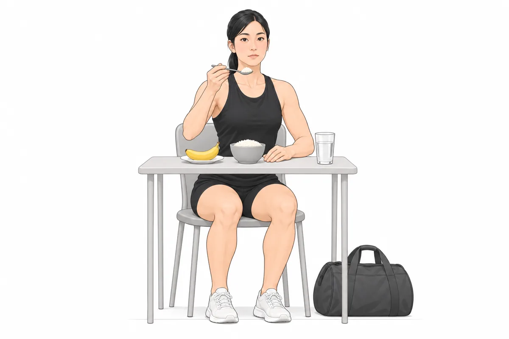
운동 몇 시간 전 — 탄수화물 위주의 가벼운 식사
- ①30~60 g/h
- ②1~1.2 g/kg/h
- ③10~12 g/kg
- ④1~4 g/kg
정답 ④
운동 1~4시간 전에는 체중 1 kg당 1~4 g의 탄수화물을 먹고, 위장관 문제를 줄이려고 지방·단백질·섬유가 많은 음식은 피한다.
🚫 오답 보기
- ①30~60 g/h는 1~2.5시간 지구성 운동 「중」에 먹는 시간당 양이다.
- ②1~1.2 g/kg/h는 운동 후 회복이 짧을 때 처음 4시간 동안의 빠른 재보충 값이다.
- ③10~12 g/kg는 90분 넘는 경기 전 36~48시간 동안의 탄수화물 부하 값(하루당)이다.
⚠️ 함정 「1~4시간 전·1~4 g/kg」처럼 숫자 1~4가 두 번 나온다 — 회복의 「처음 4시간·1~1.2 g/kg/h」와 구분한다.
근거 ✅ ACSM·AND·DC 공동 입장문 2016 「Nutrition and Athletic Performance」(J Acad Nutr Diet 116:501-528) p.508 표·p.516 원문
B08탄수화물과 지방✅ 공식·1차 자료 근거☐☐☐
2016 공동 입장문 기준, 운동 시간과 운동 중 탄수화물 섭취 권고를 바르게 짝지은 것은?
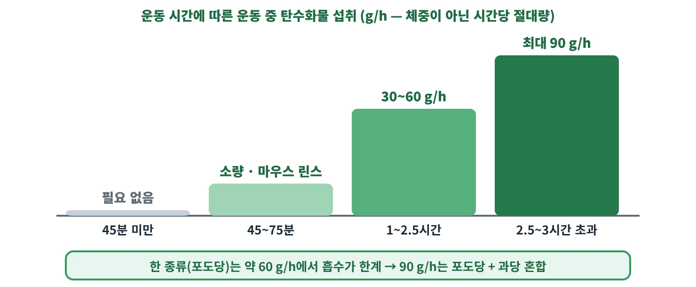
운동 시간별 운동 중 탄수화물
- ①1~2.5시간 지구성 운동 — 30~60 g/h
- ②45분 미만의 짧은 운동 — 30~60 g/h
- ③45~75분 지속 고강도 운동 — 최대 90 g/h
- ④2.5~3시간 넘는 초지구성 운동 — 1~1.2 g/kg/h
정답 ①
운동 중 탄수화물은 45분 미만 「필요 없음」, 45~75분 「소량·마우스 린스」, 1~2.5시간 30~60 g/h, 2.5~3시간 초과 「최대 90 g/h」로 운동 시간에 따라 늘어난다.
🚫 오답 보기
- ②45분 미만 운동에서는 운동 중 탄수화물이 필요하지 않다.
- ③45~75분 지속 고강도 운동은 소량 섭취나 마우스 린스로 충분하다 — 최대 90 g/h는 2.5~3시간 넘는 운동의 값이다.
- ④2.5~3시간 넘는 운동의 권고는 최대 90 g/h이며, 1~1.2 g/kg/h는 운동 후 빠른 재보충 값이다.
⚠️ 함정 운동 중 권고는 체중당(g/kg)이 아니라 시간당 절대량(g/h)이다.
B09심화탄수화물과 지방✅ 공식·1차 자료 근거☐☐☐
운동 중 포도당만 섭취하면 외인성 탄수화물 산화가 약 1 g/min(약 60 g/h)에서 더 오르지 않는다. 그 주된 이유와 이를 넘기 위한 방법을 바르게 짝지은 것은?
운동 시간별 운동 중 탄수화물
- ①인슐린 분비의 한계 — 단백질을 함께 섭취한다
- ②장의 포도당 운반체(SGLT1) 포화 — 다른 경로로 흡수되는 과당을 섞은 다중 운반 탄수화물을 섭취한다
- ③간 글리코겐 포화 — 운동 전 탄수화물을 줄인다
- ④작은 체중 — 체중 1 kg당 섭취량(g/kg)을 늘린다
정답 ②
포도당 흡수 운반체 SGLT1이 약 60 g/h에서 포화되므로, 다른 운반체를 쓰는 과당을 섞으면(포도당+과당) 외인성 산화가 약 1.26 g/min까지 오를 수 있다.
🚫 오답 보기
- ①한 리뷰는 한계의 원인을 장 흡수(SGLT1 포화)로 설명하며, 해결책은 단백질이 아니라 과당 혼합이다.
- ③산화 한계는 장에서 포도당이 흡수되는 속도 때문이며, 운동 전 탄수화물을 줄이라는 권고는 없다.
- ④외인성 탄수화물 산화는 체중과 상관이 없어 권고를 절대량 g/h로 표기한다.
⚠️ 함정 운동 중 권고가 g/kg가 아닌 g/h인 이유: 외인성 탄수화물 산화는 체중과 상관이 없다.
B11탄수화물과 지방✅ 공식·1차 자료 근거☐☐☐
2016 공동 입장문 기준, 두 고강도 세션 사이 회복 시간이 8시간 미만일 때 권하는 빠른 탄수화물 재보충은?
- ①처음 4시간 동안 30~60 g/h
- ②운동 직후 1회 0.25~0.4 g/kg
- ③36~48시간 동안 10~12 g/kg/일
- ④처음 4시간 동안 1~1.2 g/kg/h
정답 ④
회복이 8시간 미만이면 처음 4시간 동안 시간당 1~1.2 g/kg를 먹고 그 뒤 일일 필요량으로 돌아간다. ⚠️ ISSN(2017)은 회복 4시간 미만일 때 1.2 g/kg/h(고GI 선호)를 제시한다 — 상한 1.2는 같다.
🚫 오답 보기
- ①30~60 g/h는 1~2.5시간 지구성 운동 「중」에 먹는 양이다.
- ②0.25~0.4 g/kg는 단백질 1회 섭취량 권고다.
- ③36~48시간 10~12 g/kg/일은 90분 넘는 경기 전 탄수화물 부하 값이다.
⚠️ 함정 회복 재보충은 체중당 「시간당」(g/kg/h) 단위다 — 운동 중 g/h, 하루 g/kg/일과 헷갈리지 말 것.
B12탄수화물과 지방✅ 공식·1차 자료 근거☐☐☐
운동 후 빠른 탄수화물 재보충에 대한 설명으로 옳은 것은?
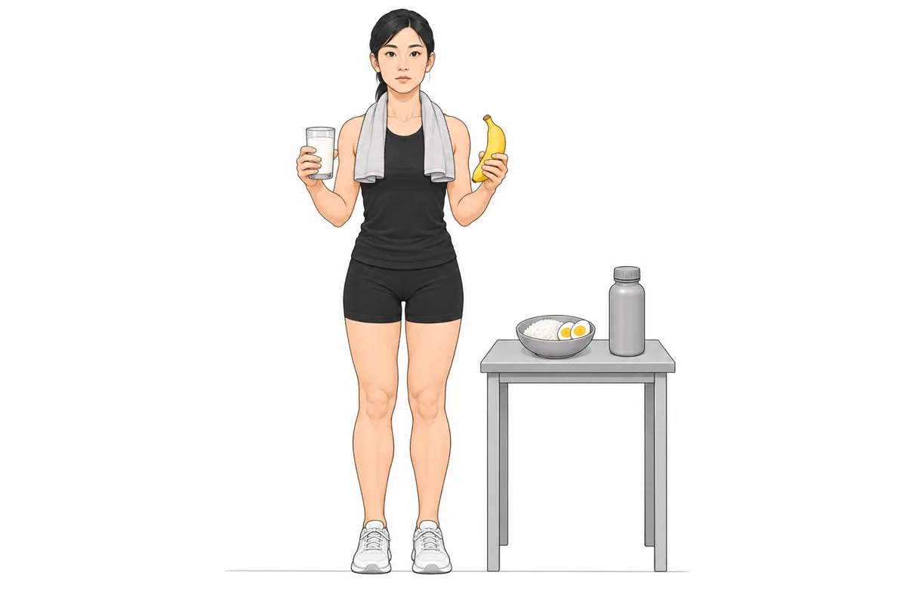
운동 뒤 — 탄수화물과 단백질을 함께 먹는 회복식
- ①빠른 글리코겐 재합성이 필요할 때는 혈당지수(GI)가 70을 넘는 고GI 탄수화물이 선호된다(ISSN 2017)
- ②회복 시간이 24시간 이상이어도 처음 4시간 1~1.2 g/kg/h를 꼭 지켜야 한다
- ③빠른 재보충이 필요할 때는 혈당지수(GI) 55 이하의 저GI 탄수화물을 우선한다
- ④회복 시간과 관계없이 운동 직후에는 탄수화물보다 지방을 먼저 먹는다
정답 ①
ISSN(2017)은 빠른 글리코겐 재합성이 필요할 때 고GI(70 초과) 탄수화물을 선호한다. 공동 입장문은 회복이 8시간 미만일 때 처음 4시간 1~1.2 g/kg/h를 권하고, 회복이 24시간 이상이면 일일 필요량을 맞추면 된다.
🚫 오답 보기
- ②빠른 재보충(1~1.2 g/kg/h)은 회복이 8시간 미만일 때의 전략이며, 회복이 길면 일일 필요량을 맞추면 된다.
- ③ISSN(2017)은 빠른 글리코겐 재합성에 고GI(70 넘는) 탄수화물을 선호한다 — GI 55 이하는 저GI다.
- ④운동 후 글리코겐 재보충의 중심은 탄수화물이며, 지방을 먼저 먹으라는 권고는 없다.
⚠️ 함정 「빠른 재보충 = 고GI(>70)」 — 저GI(≤55)와 반대로 외우기 쉽다. ISSN은 「70 초과」로 쓰고, GI 분류의 고GI는 「70 이상」이다.
B14탄수화물과 지방✅ 공식·1차 자료 근거☐☐☐
2016 공동 입장문 기준, 대부분의 선수에게 권하는 지방 섭취 비율(총에너지 대비)은?
- ①10% 미만
- ②10~15%
- ③20~35%
- ④40~50%
정답 ③
공동 입장문은 대부분의 선수에게 총에너지의 20~35%를 지방으로 권한다. ⚠️ 2025 한국인 영양소 섭취기준의 성인 지방 에너지적정비율은 15~30%로 대상·국가가 다르다(2020판과 같음).
🚫 오답 보기
- ①10% 미만은 공동 입장문이 제시한 포화지방 제한 기준이지 지방 전체 권고가 아니다.
- ②10~15%는 공동 입장문이 비권장으로 본 「만성적 20% 미만」에 해당한다.
- ④40~50%는 권고 범위(20~35%)의 상한을 훨씬 넘는다.
⚠️ 함정 운동선수 20~35%(공동 입장문)와 한국 성인 15~30%(섭취기준)를 섞기 쉽다 — 문제에 적힌 기준을 먼저 본다.
B17탄수화물과 지방✅ 공식·1차 자료 근거☐☐☐
2016 공동 입장문이 제시한 포화지방 섭취 제한 기준(총에너지 대비)은?
- ①1% 미만
- ②10% 미만
- ③20% 미만
- ④20~35%
정답 ②
공동 입장문은 포화지방을 총에너지의 10% 미만으로 제한하도록 한다.
🚫 오답 보기
- ①1% 미만은 공동 입장문의 포화지방 기준이 아니다.
- ③20%는 지방 「전체」 섭취의 하한과 관련된 숫자다 — 만성적으로 지방을 20% 미만으로 줄이는 것은 권하지 않는다.
- ④20~35%는 포화지방이 아니라 지방 전체의 권고 비율이다.
⚠️ 함정 포화지방 「10% 미만」과 지방 전체 「20~35%」, 비권장 「만성 20% 미만」의 숫자가 서로 다른 대상을 가리킨다.
근거 ✅ ACSM·AND·DC 공동 입장문 2016 「Nutrition and Athletic Performance」(J Acad Nutr Diet 116:501-528) p.511 원문
B18탄수화물과 지방✅ 공식·1차 자료 근거☐☐☐
ISSN(2017) 식이·체성분 입장문이 설명한 케톤 식이(ketogenic diet)에 가장 가까운 것은?
- ①탄수화물을 총에너지의 50~65%로 맞추는 식사
- ②단백질을 3.0 g/kg/일 넘게 늘리고 지방을 총에너지 10% 이하로 줄이는 식사
- ③탄수화물을 하루 최대 약 50 g(또는 총에너지 약 10%)으로 제한해 혈중 케톤체를 측정 가능한 수준으로 올리는 식사
- ④지방을 총에너지의 20~35%로 맞추는 식사
정답 ③
케톤 식이는 탄수화물을 최대 약 50 g 또는 총에너지 약 10%로 제한하고 단백질은 중간 정도로 두어 혈중 케톤을 약 0.5~3 mmol/L로 올리는 식사다.
🚫 오답 보기
- ①50~65%는 2025 한국인 영양소 섭취기준의 성인 탄수화물 에너지적정비율이다(2020판 55~65%).
- ②케톤 식이는 지방 비율이 높고 단백질은 중간 정도다 — 지방을 줄이는 식사가 아니다.
- ④20~35%는 운동선수 일반 지방 권고(2016 공동 입장문)다.
⚠️ 함정 케톤 식이에서 단백질은 「중간」 — 고단백 식사와 같은 것이 아니다.
🔒 탄수화물과 지방 나머지 10문제는 출간본에 담아요
C단백질6문제 공개 / 13 · 1.2~2.0 g/kg · 1회량 · 류신 · 감량기 · 단백질 질
C01단백질✅ 공식·1차 자료 근거☐☐☐
2016 공동 입장문(ACSM·AND·DC) 기준, 대사 적응과 회복을 돕기 위해 운동선수에게 일반적으로 권하는 하루 단백질 섭취량은?
훈련량별 탄수화물 · 기준별 단백질
- ①0.8 g/kg/일
- ②1.2~2.0 g/kg/일
- ③2.3~3.1 g/kg/일
- ④1.2~2.0 g/kg/회
정답 ②
공동 입장문은 운동선수에게 일반적으로 하루 1.2~2.0 g/kg의 단백질을 권한다. ⚠️ ISSN(2017)은 하한을 1.4로 잡아 1.4~2.0 g/kg/일을 제시한다(상한 2.0은 같음).
🚫 오답 보기
- ①0.8 g/kg/일은 일반인 대상 미국 권장량(RDA)이다.
- ③2.3~3.1 g/kg은 ISSN이 저칼로리 기간 저항훈련자에게 제시한 감량기 고단백 범위다.
- ④g/kg/회는 1회 섭취량 단위다 — 하루 권고는 g/kg/일로 표시한다.
⚠️ 함정 운동선수 하한은 기준에 따라 1.2(공동 입장문)와 1.4(ISSN)로 다르다 — 상한은 둘 다 2.0이다.
C03단백질✅ 공식·1차 자료 근거☐☐☐
2025 한국인 영양소 섭취기준의 성인 단백질 기준에 대한 설명으로 옳은 것은?
- ①성별·연령과 관계없이 모든 성인의 권장섭취량(g/일)이 같다
- ②단백질 에너지적정비율이 7~20%에서 5~15%로 낮아졌다
- ③19~29세 권장섭취량은 남자 65 g/일, 여자 55 g/일이다
- ④운동선수 권고(1.2~2.0 g/kg/일)를 일반 성인에게 그대로 적용한다
정답 ③
2025 섭취기준의 단백질 권장섭취량은 남 19~49세 65 g·50세 이상 60 g, 여 19~29세 55 g·30세 이상 50 g이고, 에너지적정비율은 10~20%로 올랐다. ⚠️ 2020판: 에너지적정비율 7~20%, 체중당 권장섭취량 0.91 g/kg/일·평균필요량 0.73 g/kg/일(교재 옛 값 가능).
🚫 오답 보기
- ①성별·연령에 따라 다르다(예: 남 50세 이상 60 g, 여 30세 이상 50 g).
- ②단백질 에너지적정비율은 7~20%에서 10~20%로 「올랐다」.
- ④섭취기준은 일반 국민 대상 기준이며, 1.2~2.0 g/kg/일은 2016 공동 입장문의 운동선수 권고다.
⚠️ 함정 한국 권장섭취량(체중당 0.91 g/kg/일, 2020판 근거)과 미국 RDA 0.8 g/kg/일을 뒤바꾸기 쉽다.
C04단백질✅ 공식·1차 자료 근거☐☐☐
ISSN(2017) 단백질 입장문이 근단백질합성(MPS)을 위해 권하는 1회 단백질 섭취량은?
- ①체중 1 kg당 약 0.25 g(절대량 약 20~40 g)
- ②체중 1 kg당 1.2~2.0 g
- ③절대량 80~100 g
- ④절대량 5~10 g
정답 ①
ISSN은 1회에 고품질 단백질 0.25 g/kg 또는 절대량 20~40 g을 권한다. ⚠️ 2016 공동 입장문은 회복 초기 0.25~0.3 g/kg 또는 15~25 g으로 제시한다.
🚫 오답 보기
- ②1.2~2.0 g/kg는 하루 권고량(공동 입장문)이다.
- ③공동 입장문은 40 g 넘는 양이 MPS를 더 높인다는 근거가 아직 없다고 본다.
- ④ISSN 타이밍 입장문은 단백질 20~40 g(또는 필수아미노산 약 10 g)이 MPS를 최대로 자극한다고 보며, 5~10 g의 단백질은 이보다 훨씬 적다.
⚠️ 함정 1회량(0.25 g/kg)과 하루량(1.2~2.0 g/kg/일)의 단위를 구분한다.
C05단백질✅ 공식·1차 자료 근거☐☐☐
ISSN(2017) 단백질 입장문이 1회 단백질 섭취에 담기도록 권하는 류신(leucine) 양은?
- ①7~30 mg
- ②700~3000 g
- ③20~40 g
- ④700~3000 mg
정답 ④
ISSN은 1회 섭취에 류신 700~3000 mg(0.7~3 g)과 균형 잡힌 필수아미노산이 들어 있도록 권한다.
🚫 오답 보기
- ①7~30 mg은 권고량(700~3000 mg)의 100분의 1 수준이다.
- ②단위가 틀렸다 — 700~3000 「mg」이다.
- ③20~40 g은 류신이 아니라 단백질의 1회 섭취량이다.
⚠️ 함정 700~3000은 mg 단위다 — g으로 바꾸면 0.7~3 g이다.
근거 ✅ ISSN 입장문 「Protein and exercise」(Jäger 외, JISSN 2017;14:20) 원문
C07단백질✅ 공식·1차 자료 근거☐☐☐
ISSN(2017) 입장문이 설명한 취침 전 카제인 단백질 30~40 g 섭취의 효과로 옳은 것은?
- ①밤사이 근단백질합성(MPS)과 대사율을 높이며, 지방분해(lipolysis)에는 영향을 주지 않는다
- ②밤사이 지방분해를 크게 억제해 체지방이 늘어난다
- ③빨리 소화되어 1시간 안에 효과가 끝난다
- ④수면 중 근글리코겐을 집중적으로 채우는 것이 주된 효과다
정답 ①
취침 전 카제인 30~40 g은 밤사이 MPS와 대사율을 높이고 지방분해에는 영향을 주지 않는다고 정리되어 있다.
🚫 오답 보기
- ②입장문은 취침 전 카제인이 지방분해에 영향을 주지 않는다고 정리했다.
- ③카제인은 천천히 소화되는 단백질이다.
- ④취침 전 카제인의 효과로 설명된 것은 밤사이 근단백질합성·대사율 증가이며, 글리코겐 재보충은 탄수화물의 역할이다.
⚠️ 함정 「자기 전에 먹으면 살이 찐다」는 통념과 달리 입장문은 지방분해에 영향이 없다고 본다.
C13단백질✅ 공식·1차 자료 근거☐☐☐
동물성 단백질과 식물성 단백질에 대한 설명으로 옳은 것은?
- ①식물성 단백질은 동물성보다 류신이 많은 공급원이다
- ②콩(대두) 단백질은 우유 단백질보다 분지사슬아미노산(BCAA)이 많다
- ③채식 선수는 단백질 걱정이 없으며 근육 크레아틴 저장량도 잡식 선수보다 많다
- ④식물성 단백질은 류신이 적은 편이어서, 채식 선수는 단백질의 공급원과 양을 더 신경 써야 한다
정답 ④
ISSN(2017)은 식물성 단백질을 류신이 적은 공급원으로, 콩을 우유보다 BCAA가 적은 단백질로 서술한다. 비건 선수에게는 ISSN 범위(1.4~2.0 g/kg/일) 중 상단을 지향하도록 권하는 자료도 있다.
🚫 오답 보기
- ①식물성 단백질은 류신이 「적은」 공급원이다.
- ②ISSN은 콩이 우유보다 BCAA가 「적다」고 서술한다.
- ③채식 선수는 에너지·단백질·크레아틴 등이 부족할 위험이 있고, 채식은 근육 크레아틴 저장량을 낮춘다.
⚠️ 함정 채식 선수의 위험 영양소는 단백질만이 아니다 — 크레아틴·카르노신 저장량도 낮다.
🔒 단백질 나머지 7문제는 출간본에 담아요
D수분과 비타민·무기질9문제 공개 / 18 · 땀률 · 2% · 저나트륨혈증 · 철 · 칼슘·비타민 D
D01수분과 비타민·무기질✅ 공식·1차 자료 근거☐☐☐
2016 ACSM·AND·DC 공동 입장문 기준, 운동 전 수분 섭취 권고로 옳은 것은?
- ①운동 직전 10분 안에 체중 1 kg당 1.25~1.5 L를 한 번에 마신다
- ②운동 2~4시간 전에 체중 1 kg당 5~10 mL를 마시고, 연한 노란색 소변을 목표로 한다
- ③운동 1~4시간 전에 체중 1 kg당 1~4 mL만 마신다
- ④갈증이 없으면 운동 전에는 마시지 않는다
정답 ②
2016 공동 입장문은 운동 2~4시간 전에 체중 1 kg당 5~10 mL를 마셔 소변이 연한 노란색이 되게 하라고 권한다. ⚠️ ACSM 2007 계열 자료(2차 인용)는 「약 4시간 전 5~7 mL/kg, 소변이 진하면 2시간 전 3~5 mL/kg 추가」로 적어 교재에 옛 값이 실렸을 수 있다.
🚫 오답 보기
- ①1.25~1.5 L/kg은 운동 후 줄어든 체중 1 kg당 보충량이며, 운동 직전에 몰아 마시는 권고도 아니다.
- ③「1~4」는 운동 1~4시간 전 탄수화물 1~4 g/kg과 헷갈린 숫자이고, 수분 권고 5~10 mL/kg보다 훨씬 적다.
- ④공동 입장문은 운동 전에 미리 수분을 채우라고 하고, NATA도 정상 수분 상태로 운동을 시작하라고 한다.
⚠️ 함정 운동 전은 mL/kg(체중 1 kg당), 운동 후는 L/kg(줄어든 체중 1 kg당) — 단위와 분모가 다르다.
D03수분과 비타민·무기질✅ 공식·1차 자료 근거☐☐☐
운동 전 체중 70.0 kg인 선수가 1시간 운동한 뒤 68.8 kg이 되었다. 운동 중 물 0.8 L를 마셨고 소변은 0.2 L를 보았다. 체중 1 kg 감소를 땀 약 1 L로 볼 때 시간당 땀률은?
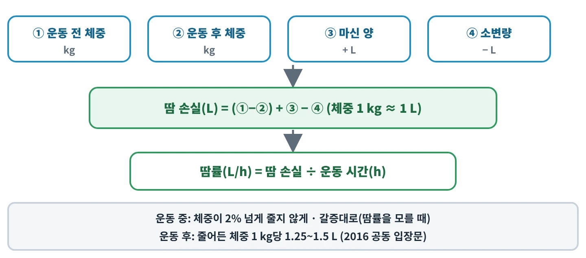
땀 손실·땀률 계산
- ①1.0 L/h
- ②1.2 L/h
- ③2.2 L/h
- ④1.8 L/h
정답 ④
땀 손실 = (운동 전 체중 − 운동 후 체중) + 마신 양 − 소변량 = 1.2 + 0.8 − 0.2 = 1.8 L이고, 1시간 운동이므로 땀률은 1.8 L/h이다.
🚫 오답 보기
- ①마신 물을 더하지 않고 소변만 뺀 값(1.2 − 0.2)이다.
- ②체중 변화만 본 값이다 — 마신 양과 소변량 보정이 빠졌다.
- ③소변량을 빼야 하는데 더했다(1.2 + 0.8 + 0.2).
⚠️ 함정 마신 물은 체중을 늘렸으니 「더하고」, 소변은 땀이 아니니 「뺀다」.
D06수분과 비타민·무기질✅ 공식·1차 자료 근거☐☐☐
2016 공동 입장문 기준, 땀으로 잃는 나트륨이 많아 운동 중 나트륨 섭취를 고려할 상황으로 가장 알맞은 것은?
- ①땀률 약 0.3 L/h로 30분 걷기
- ②땀률이 1.2 L/h를 넘고 땀이 짜며, 2시간 넘게 달리기
- ③실내에서 20분 가벼운 스트레칭
- ④45분 미만의 짧은 근력 운동
정답 ②
공동 입장문은 땀률 1.2 L/h 초과·짠 땀·2시간 넘는 운동처럼 땀 나트륨 손실이 클 때 운동 중 나트륨을 섭취하고, 운동 후에도 나트륨을 제한하지 말라고 한다(나트륨이 수분 보유를 돕는다). 땀 나트륨은 평균 약 1 g/L(50 mmol/L)이다.
🚫 오답 보기
- ①땀률이 낮고 시간이 짧아 땀 나트륨 손실이 크지 않다.
- ③땀 손실이 거의 없는 짧고 가벼운 활동이다.
- ④짧은 운동이라 땀률·운동 시간 조건에 해당하지 않는다.
⚠️ 함정 ⚠️ 나트륨 보충 기준 땀률은 출처마다 다르다 — 공동 입장문 1.2 L/h 초과, NATA는 땀 나트륨 60 mEq/L 초과 + 땀률 2.5 L/h 초과.
D07수분과 비타민·무기질✅ 공식·1차 자료 근거☐☐☐
수분 상태 지표에 대한 설명으로 옳은 것은?
- ①소변 색이 진할수록 수분 상태가 좋다
- ②소변 삼투질 농도가 900 mOsmol/kg을 넘으면 정상 수분 상태다
- ③소변 비중이 대체로 1.020 미만이면 정상 수분 상태로 본다
- ④소변 비중이 높을수록 소변이 묽다
정답 ③
공동 입장문은 소변 비중 1.020 미만(넓게는 1.025 미만)을 대체로 정상 수분으로 보고, 소변 삼투질 농도 900 mOsmol/kg 초과는 저수분, 700 미만은 정상으로 본다. ⚠️ NATA는 체급 인증 때 아침 첫 소변 비중 1.025 미만을 기준으로 쓴다.
🚫 오답 보기
- ①공동 입장문의 목표는 「연한 노란색」 소변이다.
- ②900 mOsmol/kg 초과는 저수분이고, 700 미만이 정상이다.
- ④정상 수분 쪽은 비중이 낮은 쪽이다 — 비중이 높을수록 농축된 소변이다.
⚠️ 함정 소변 비중 기준은 1.020(공동 입장문)과 1.025(NATA 체급 인증) 두 값이 있다 — 문제가 어느 기준인지 확인한다.
D09수분과 비타민·무기질✅ 공식·1차 자료 근거☐☐☐
철 결핍이 진행되는 3단계를 순서대로 바르게 나열한 것은?
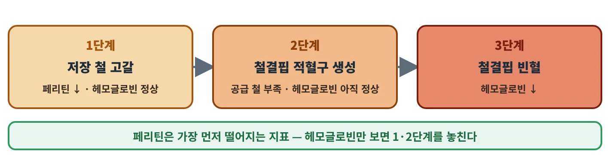
철 결핍 3단계
- ①저장 철 고갈 → 철결핍 적혈구 생성 → 철결핍성 빈혈
- ②철결핍성 빈혈 → 저장 철 고갈 → 철결핍 적혈구 생성
- ③철결핍 적혈구 생성 → 철결핍성 빈혈 → 저장 철 고갈
- ④저장 철 고갈 → 철결핍성 빈혈 → 철결핍 적혈구 생성
정답 ①
먼저 저장 철이 줄고(1단계), 이어 트랜스페린 포화도가 떨어지며 적혈구를 만들 철이 모자라지만 헤모글로빈은 보통 정상이고(2단계), 마지막에 헤모글로빈·헤마토크릿이 떨어지는 철결핍성 빈혈(3단계)이 된다.
🚫 오답 보기
- ②빈혈은 마지막 단계다 — 저장 철 고갈이 먼저다.
- ③저장 철 고갈이 첫 단계인데 마지막에 놓았다.
- ④2단계와 3단계 순서가 바뀌었다 — 빈혈 전에 철결핍 적혈구 생성 단계가 온다.
⚠️ 함정 헤모글로빈은 「마지막」에 떨어진다 — 헤모글로빈이 정상이어도 철 결핍일 수 있다.
D11수분과 비타민·무기질✅ 공식·1차 자료 근거☐☐☐
식물성 식품에 든 비헴철의 흡수를 높이는 것은?
- ①식사와 함께 마시는 진한 차
- ②우유처럼 칼슘이 많은 식품
- ③비타민 C가 많은 과일
- ④피트산이 많은 통곡물·콩
정답 ③
비헴철 흡수는 비타민 C와 육류·가금·해산물이 함께 있으면 늘고, 피트산·폴리페놀(차·커피)·칼슘이 있으면 줄어든다. 육류·생선의 헴철은 비헴철보다 생체이용률이 높다.
🚫 오답 보기
- ①차의 폴리페놀은 비헴철 흡수를 낮춘다.
- ②칼슘은 비헴철 흡수를 낮춘다.
- ④피트산은 비헴철(그리고 아연) 흡수를 낮춘다.
⚠️ 함정 철 보충제나 철이 많은 식사를 차·커피·우유와 함께 먹으면 흡수가 줄 수 있다 — 비타민 C와 함께 먹는다.
D12수분과 비타민·무기질✅ 공식·1차 자료 근거☐☐☐
칼슘과 비타민 D에 대한 설명으로 옳은 것은?
- ①혈청 칼슘 수치가 낮지 않으면 칼슘 섭취가 충분하다고 판단할 수 있다
- ②체내 칼슘의 대부분은 혈액과 근육에 있다
- ③칼슘 보충제는 한 번에 많이 먹을수록 흡수율이 높다
- ④비타민 D는 장에서 칼슘 흡수를 촉진한다
정답 ④
비타민 D는 장에서 칼슘 흡수를 촉진하고 혈청 칼슘·인을 유지해 뼈 성장과 재형성을 돕는다. 체내 칼슘의 99% 이상은 뼈와 치아에 있다.
🚫 오답 보기
- ①혈중 칼슘은 엄격히 조절돼 혈청 수치가 영양 상태를 반영하지 않는다(뼈가 저장고 역할).
- ②99% 이상이 뼈와 치아에 있다.
- ③보충제는 1회 500 mg 이하일 때 흡수율이 가장 높다.
⚠️ 함정 ⚠️ 한국 칼슘 권장섭취량(19~49세 여): 2025판 650 mg/일, 2020판 700 mg/일 — 교재에 옛 값이 실렸을 수 있다.
D14수분과 비타민·무기질✅ 공식·1차 자료 근거☐☐☐
마그네슘과 아연에 대한 설명으로 옳은 것은?
- ①마그네슘 상한섭취량은 식품으로 먹는 마그네슘까지 모두 합쳐 적용한다
- ②통곡물·콩의 피트산은 장에서 아연과 결합해 흡수를 낮춘다
- ③아연은 고용량을 오래 먹을수록 면역 기능이 계속 좋아진다
- ④마그네슘은 효소의 보조인자 역할을 거의 하지 않는다
정답 ②
피트산은 장에서 아연과 결합해 흡수를 낮추고, 채식·비건 식단은 아연 섭취량도 대체로 낮다. 마그네슘은 300개 넘는 효소계의 보조인자로 단백질 합성·근육과 신경 기능·에너지 생성에 관여한다.
🚫 오답 보기
- ①마그네슘 상한은 보충제·약물로 먹는 마그네슘에만 적용하고 식품은 제외한다.
- ③IOC 2018은 고용량 아연이 오히려 면역을 떨어뜨린다고 했고, 50 mg/일 이상을 오래 먹으면 구리 흡수를 방해한다.
- ④마그네슘은 300개 넘는 효소계의 보조인자다.
⚠️ 함정 마그네슘 상한 350 mg/일(미국, 한국 2025)은 보충제·약물 등 「식품 외 급원」에만 적용한다.
D17수분과 비타민·무기질✅ 공식·1차 자료 근거☐☐☐
비타민과 그 결핍증의 연결로 옳지 않은 것은?
- ①비타민 C — 각기병
- ②비타민 A — 야맹증
- ③비타민 D — 어린이 구루병·성인 골연화증
- ④비타민 K — 출혈(혈액 응고 장애)
정답 ①
각기병은 티아민(비타민 B1) 결핍이고, 비타민 C 결핍은 괴혈병(약 10 mg/일 미만에서 피로·잇몸 염증·상처 치유 지연)이다.
🚫 오답 보기
- ②옳은 연결 — 비타민 A 결핍의 첫 징후가 야맹증이다.
- ③옳은 연결 — 비타민 D 결핍은 어린이 구루병, 성인 골연화증을 일으킨다.
- ④옳은 연결 — 비타민 K는 응고 인자를 만드는 데 필요해 결핍되면 출혈이 생긴다.
⚠️ 함정 괴혈병(C)과 각기병(B1)을 서로 바꿔 내는 보기가 많다.
🔒 수분과 비타민·무기질 나머지 9문제는 출간본에 담아요
E보충제·도핑·영양 타이밍10문제 공개 / 20 · 근거 5종 · AIS 분류 · 엄격책임 · 운동 전·후 식사
E05보충제·도핑·영양 타이밍✅ 공식·1차 자료 근거☐☐☐
크레아틴 일수화물 보충에 대한 설명으로 옳은 것은?
- ①일관되게 보고되는 부작용은 체중 증가이며, 로딩 때는 주로 수분이 늘어난다
- ②건강한 사람에게서 신장 기능 장애를 일관되게 일으킨다
- ③채식인은 근육 크레아틴이 높아 보충 효과가 작다
- ④40분 넘는 지구성 타임트라이얼에서 효과가 가장 크다
정답 ①
ISSN 2017은 일관되게 보고되는 유일한 부작용을 체중 증가로 보고(로딩 때 수분 약 0.5~1.0 L 보유), IOC 2018은 150초 미만(특히 30초 미만) 반복 고강도 운동에서 수행이 오른다고 정리한다.
🚫 오답 보기
- ②ISSN 2017은 건강한 사람·환자 모두에서 신장 기능 장애 근거가 없다고 했다.
- ③채식인은 근육 크레아틴이 더 낮아(약 90~110 vs 약 120 mmol/kg 건조근) 보충 효과가 더 클 수 있다.
- ④효과는 150초 미만의 반복 고강도 운동에서 뚜렷하다.
⚠️ 함정 1~2 kg 체중 증가(주로 수분)는 지구력·체급 종목에서는 불리할 수 있다(IOC 2018).
E08보충제·도핑·영양 타이밍✅ 공식·1차 자료 근거☐☐☐
ISSN 2021 중탄산나트륨 입장문의 내용으로 옳은 것은?
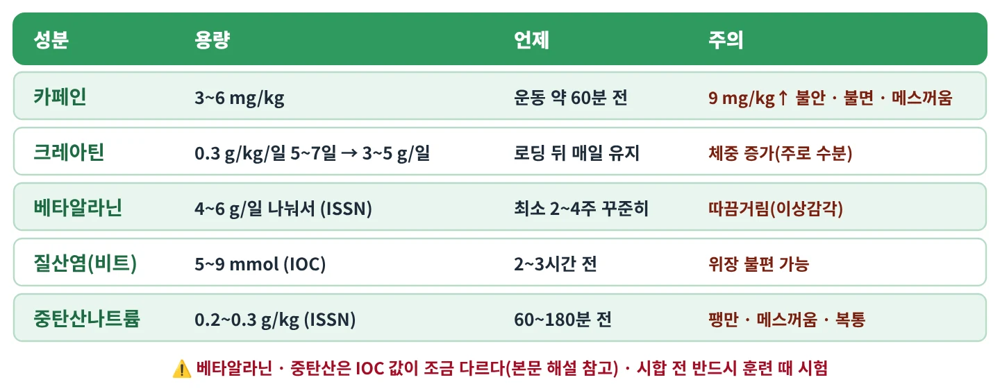
근거가 좋은 보충제 5종
- ①체중 1 kg당 1 g 이상 많이 먹을수록 효과가 계속 커진다
- ②효과는 40분 넘는 지구성 운동에서 가장 확립돼 있다
- ③부작용이 거의 없어 경기 직전 공복에 한꺼번에 먹는 것이 좋다
- ④최적 용량은 약 0.3 g/kg이고, 흔한 부작용은 복부 팽만·메스꺼움 같은 위장 증상이다
정답 ④
ISSN 2021은 최소 유효량 0.2 g/kg, 최적 0.3 g/kg을 운동 60~180분 전에 먹도록 하고, 효과는 30초~12분 고강도 과제에서 가장 확립돼 있다고 본다. 위장 증상은 소량 분할·약 180분 전 섭취·고탄수화물 식사와 함께·장용 코팅 캡슐로 줄인다.
🚫 오답 보기
- ①0.3 g/kg을 넘기면 이득 없이 부작용만 는다.
- ②효과가 가장 확립된 것은 30초~12분의 고강도 과제다.
- ③위장 부작용이 흔하며, 고탄수화물 식사와 함께 나눠 먹는 것이 완화법이다.
⚠️ 함정 ⚠️ 용량·시점은 출처마다 다르다 — ISSN 0.2~0.3 g/kg·60~180분 전, IOC 2018 0.2~0.4 g/kg·60~150분 전.
E09보충제·도핑·영양 타이밍✅ 공식·1차 자료 근거☐☐☐
호주스포츠연구원(AIS) 보충제 분류에서 「금지되었거나 도핑 양성을 일으킬 물질로 오염될 위험이 높아」 선수 사용을 막는 그룹은?
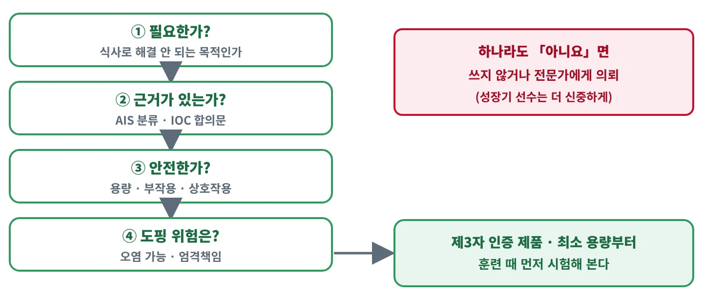
보충제를 쓸지 판단하는 흐름
- ①Group A
- ②Group B
- ③Group C
- ④Group D
정답 ④
AIS 분류는 「안전한가·효과가 있는가·스포츠에서 허용되는가」를 따져 성분을 4그룹으로 나누며, Group D(에페드린·DHEA·SARMs·히게나민·초유 등)는 선수 사용을 금한다.
🚫 오답 보기
- ①Group A는 특정 상황에서 근거 기반으로 쓸 강한 과학적 근거가 있는 그룹이다(스포츠식품·의학적 보충제·경기력 보충제).
- ②Group B는 근거가 새로 나타나거나 엇갈려 연구·모니터링 상황에서 개별 고려하는 그룹이다.
- ③Group C는 이득 근거가 없거나 판단할 연구가 없어 권하지 않는 그룹이다.
⚠️ 함정 트리불루스·마카 뿌리처럼 WADA 목록에 없어도 오염·혼입 위험 때문에 Group D에 든 것이 있다.
E10보충제·도핑·영양 타이밍✅ 공식·1차 자료 근거☐☐☐
근거가 약한 보충제에 대한 설명으로 옳은 것은?
- ①글루타민은 단독으로 경기력을 높인다는 근거가 없다
- ②HMB 유리산 제품은 「스테로이드급」 근비대 효과가 확립돼 있다
- ③BCAA는 지구력 경기력을 높이는 근거가 강해 IOC 근거 5종에 든다
- ④HMB는 근력·제지방량을 크게 늘려 식이 단백질을 대신할 수 있다
정답 ①
NIH ODS는 글루타민 단독의 경기력 향상 근거가 없다고 하고(역도 선수 약 45 g/일 6주에도 근력·체성분 차이 없음), IOC 2018은 HMB를 근력·제지방량에 작은 효과이며 적절한 식이 단백질로도 얻을 수 있는 이득으로 본다.
🚫 오답 보기
- ②IOC 2018은 유리산 HMB의 「스테로이드급」 효과 주장을 개연성이 낮다고 보았다.
- ③NIH ODS는 BCAA의 지구력 경기력 향상 근거가 적다고 보며, IOC 근거 5종에 들지 않는다.
- ④IOC 2018은 HMB의 효과가 작고 적절한 식이 단백질로 얻을 수 있는 이득이라고 보았다.
⚠️ 함정 ⚠️ 현행 AIS 분류는 HMB·BCAA를 Group C로 두지만 과거 판은 Group B였다 — 교재에 옛 값이 실렸을 수 있다.
E11보충제·도핑·영양 타이밍✅ 공식·1차 자료 근거☐☐☐
선수의 시료에서 금지물질이 검출되면 고의·과실·부주의나 인지 여부를 따지지 않고 위반이 성립한다는 원칙은?
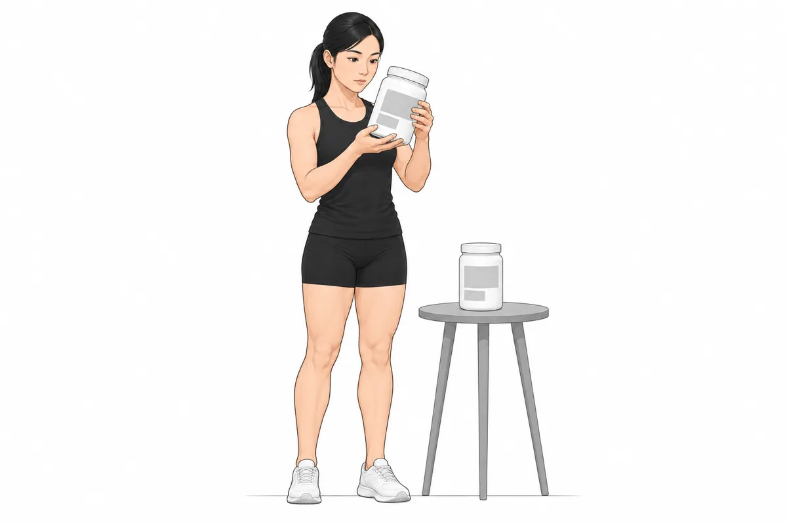
보충제 고르기 — 성분표와 제3자 인증 확인
- ①엄격책임(strict liability)
- ②치료목적사용면책(TUE)
- ③감시 프로그램(monitoring program)
- ④제3자 인증(third-party certification)
정답 ①
WADA 규약 2021 제2.1.1조는 금지물질이 체내에 들어가지 않게 하는 것을 선수 개인의 의무로 두고 고의·과실을 입증할 필요가 없다고 하며, CAS 판례가 이를 엄격책임이라 부른다. KADA 프로스포츠 도핑방지규정도 같은 원칙을 둔다.
🚫 오답 보기
- ②TUE는 진단된 질환 치료에 필요한 금지약물을 원칙적으로 사전 승인받아 쓰는 제도다.
- ③감시 프로그램은 카페인처럼 금지는 아니지만 사용 실태를 지켜보는 대상이다.
- ④제3자 인증은 보충제 오염 위험을 줄이는 검사 제도일 뿐 선수의 책임을 없애지 않는다.
⚠️ 함정 오염 보충제 탓이어도 위반은 성립한다 — 오염제품이고 중대한 과실이 없음을 입증하면 제재가 견책~2년으로 줄 수 있을 뿐이다.
E14보충제·도핑·영양 타이밍✅ 공식·1차 자료 근거☐☐☐
경기 몇 시간 전에 먹는 식사의 구성으로 가장 알맞은 것은?
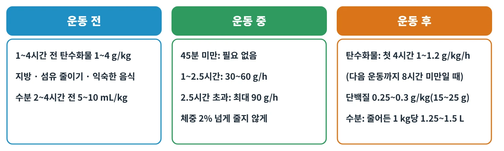
운동 전·중·후 타이밍
- ①지방과 식이섬유가 많은 음식 위주
- ②단백질 위주로 하고 탄수화물은 최소화
- ③평소보다 두 배 많은 고섬유 채소
- ④탄수화물 위주로 하고, 지방·섬유는 적게, 단백질은 적당히
정답 ④
공동 입장문은 경기 전 식사로 저지방·저섬유·저~중단백질을 권하고 운동 1~4시간 전 탄수화물 1~4 g/kg을 제시한다. 지방·단백질·섬유가 많은 음식은 위장관 문제 위험 때문에 피한다.
🚫 오답 보기
- ①지방·섬유가 많으면 위장관 문제 위험이 커진다.
- ②운동 전 식사는 탄수화물이 중심이며, 단백질은 저~중 수준이 선호된다.
- ③섬유가 많으면 위장관 문제 위험이 커진다.
⚠️ 함정 운동 전 식사에서 줄이는 것은 지방·섬유(그리고 과한 단백질)이고, 탄수화물은 줄이지 않는다.
근거 ✅ ACSM·AND·Dietitians of Canada 공동 입장문 「Nutrition and Athletic Performance」(2016, J Acad Nutr Diet 판 PDF) 원문
E15보충제·도핑·영양 타이밍✅ 공식·1차 자료 근거☐☐☐
ISSN 2017 영양 타이밍 입장문 기준, 여러 종목을 3~6세트(8~12RM)씩 하는 저항운동 도중 탄수화물(단독 또는 단백질과 함께)을 먹을 때 기대할 수 있는 효과로 옳은 것은?
- ①저항운동은 글리코겐을 쓰지 않으므로 아무 효과가 없다
- ②혈당을 유지하고 글리코겐을 늘리며 근손상을 줄이는 데 도움이 될 수 있다
- ③운동 중 탄수화물이 근단백질합성을 완전히 멈추게 한다
- ④지방 산화가 최대로 올라 체지방 감량이 빨라진다
정답 ②
ISSN 2017은 다종목 저항운동(예: 3~6세트, 8~12RM) 중 탄수화물을 단독으로 또는 단백질과 함께 먹으면 혈당 유지, 글리코겐 증가, 근손상 감소에 도움이 된다고 정리했다.
🚫 오답 보기
- ①다종목·다세트 저항운동도 글리코겐을 쓰며, ISSN은 운동 중 탄수화물이 글리코겐 증가에 도움이 된다고 보았다.
- ③ISSN은 운동 중 탄수화물(단백질과 함께도)을 회복을 돕는 전략으로 정리했고, 근단백질합성을 막는다고 하지 않았다.
- ④제시된 효과는 혈당 유지·글리코겐·근손상 쪽이며, 지방 산화를 최대로 올린다는 근거는 없다.
⚠️ 함정 운동 중 탄수화물 섭취는 지구성 운동만의 이야기가 아니다 — 여러 세트를 하는 저항운동에서도 근거가 있다.
근거 ✅ ISSN 입장문 「Nutrient timing」(Kerksick 외, 2017) 원문
E17보충제·도핑·영양 타이밍✅ 공식·1차 자료 근거☐☐☐
「아나볼릭 윈도우(운동 직후의 짧은 섭취 시간대)」 논쟁에 대한 설명으로 옳은 것은?
- ①운동 후 30분 안에 단백질을 먹지 못하면 근비대 효과가 사라진다
- ②ISSN 2017은 운동 전 단백질 섭취에는 이득이 없다고 결론 내렸다
- ③운동 후 섭취 시간대가 보편적으로 좁고 급하다는 가정에는 의문이 제기됐고, 근육은 약 24시간 동안 단백질에 민감하다
- ④운동 직후 단백질 섭취는 근단백질합성에 아무 영향이 없다
정답 ③
영양 타이밍을 재검토한 한 리뷰는 운동 후 창이 보편적으로 좁다는 고전적 가정에 의문을 던졌다. ISSN 2017은 운동 직후~2시간 고품질 단백질이 근단백질합성을 크게 늘리지만 시점은 개인 내성 문제일 가능성이 크고 운동 전·후 모두 이득이며, 동화 효과는 최소 24시간 이어진다고 본다.
🚫 오답 보기
- ①근육은 운동 후 약 24시간 단백질에 민감하며, 30분이라는 좁은 창은 의문이 제기된 가정이다.
- ②ISSN 2017은 운동 전·후 모두 이득이라고 보았다.
- ④ISSN 2017은 운동 직후~2시간 고품질 단백질이 근단백질합성을 크게 늘린다고 했다.
⚠️ 함정 ⚠️ 「30분 안」은 옛 글리코겐 연구에서 나온 표현으로 교재 옛 값일 수 있다 — ISSN 2017 본문에는 「anabolic window」라는 말 자체가 없다.
E19보충제·도핑·영양 타이밍✅ 공식·1차 자료 근거☐☐☐
ISSN 2017 영양 타이밍 입장문이 하루 식사 횟수를 바꾸는 것의 효과에 대해 정리한 내용으로 옳은 것은?
- ①식사 횟수만 늘려도 체지방이 크게 줄어든다
- ②체중·체성분에 주는 영향은 제한적이지만, 식욕·포만감 조절에는 이득 근거가 더 강하다
- ③하루 한 끼로 몰아 먹으면 근단백질합성이 최대가 된다
- ④식사 횟수는 식욕·포만감과 아무 관련이 없다
정답 ②
ISSN 2017은 식사 횟수 변경이 체중·체성분에 주는 영향은 제한적이지만 식욕과 포만감에는 이득 근거가 더 강하다고 정리한다.
🚫 오답 보기
- ①식사 횟수 변경의 체중·체성분 효과는 제한적이다.
- ③ISSN은 단백질을 하루 동안 3~4시간마다 고르게 나눠 먹으라고 한다.
- ④식욕·포만감에는 오히려 이득 근거가 더 강하다.
⚠️ 함정 「식사 횟수 = 체지방 감소」가 아니다 — 체성분보다 식욕·포만감 쪽 근거가 강하다.
E20보충제·도핑·영양 타이밍✅ 공식·1차 자료 근거☐☐☐
경기 당일 영양 계획으로 가장 알맞은 것은?
- ①경기 당일 처음 써 보는 새 에너지젤로 보급 계획을 바꾼다
- ②경기 전날부터 물을 끊어 체중을 줄인 상태로 출전한다
- ③훈련과 모의 경기에서 미리 시험해 본 음식·보급 계획을 그대로 쓴다
- ④경기 직전에 평소보다 많은 고섬유·고지방 식사를 한다
정답 ③
공동 입장문은 경기 중 보급 전략을 훈련 중에 연습해 자기 계획을 찾으라고 하고(장 훈련으로 위장관 내성도 좋아진다), IOC 2018도 보충제를 훈련·모의 경기에서 먼저 시험하라고 권한다.
🚫 오답 보기
- ①처음 쓰는 제품은 위장 내성을 확인하지 못했다 — 훈련에서 먼저 연습한다.
- ②2%를 넘는 수분 결손은 수행을 떨어뜨리며, 운동은 정상 수분 상태로 시작한다.
- ④지방·섬유가 많은 음식은 위장관 문제 위험 때문에 경기 전에 피한다.
⚠️ 함정 「경기날 새것 금지」 — 젤·음료·보충제 모두 훈련에서 먼저 써 본다.
🔒 보충제·도핑·영양 타이밍 나머지 10문제는 출간본에 담아요
F영양 평가·코칭·특수 집단7문제 공개 / 14 · 식사 평가 · 섭취기준 · 업무 범위 · REDs · 여성·청소년·노인·채식
F04영양 평가·코칭·특수 집단✅ 공식·1차 자료 근거☐☐☐
한국인 영양소 섭취기준의 용어 설명으로 옳지 않은 것은?
- ①충분섭취량은 필요량을 추정할 과학적 근거가 부족할 때 정한다
- ②상한섭취량은 건강에 해로운 영향이 나타나지 않는 최대 섭취 수준이다
- ③에너지는 과잉 섭취를 막기 위해 권장섭취량과 상한섭취량을 함께 정한다
- ④평균필요량은 건강한 사람들의 절반이 필요량을 충족하는 수준이다
정답 ③
에너지는 과잉 섭취가 우려되므로 권장섭취량을 두지 않고 평균필요량 개념에 해당하는 에너지필요추정량(EER)만 두며, 성인의 EER은 에너지 평형 상태의 에너지 소비량으로 정한다.
🚫 오답 보기
- ①충분섭취량의 정의와 맞는다.
- ②상한섭취량의 정의와 맞는다.
- ④평균필요량의 정의와 맞는다.
⚠️ 함정 다른 영양소처럼 에너지에도 권장섭취량이 있다고 생각하기 쉽다 — 에너지는 EER 하나뿐이다.
F05영양 평가·코칭·특수 집단✅ 공식·1차 자료 근거☐☐☐
2025 한국인 영양소 섭취기준의 성인 에너지적정비율로 옳은 것은?
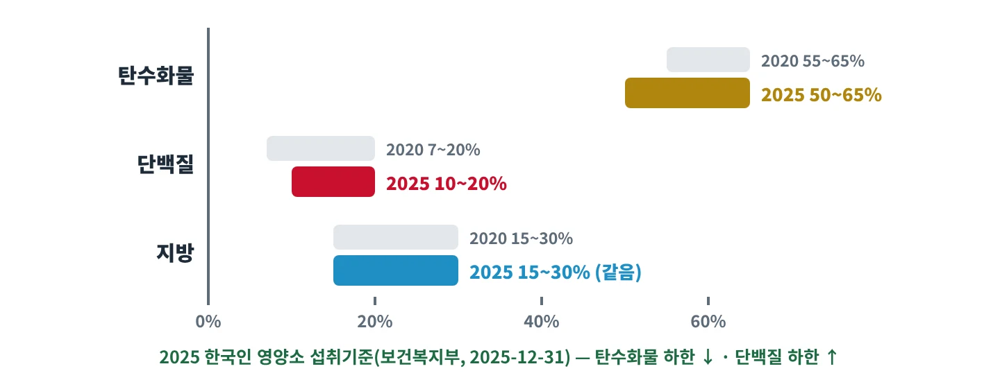
2025 한국인 영양소 섭취기준 에너지적정비율
- ①탄수화물 50~60% · 단백질 15~25% · 지방 15~25%
- ②탄수화물 50~65% · 단백질 10~20% · 지방 15~30%
- ③탄수화물 45~55% · 단백질 10~20% · 지방 25~35%
- ④탄수화물 60~70% · 단백질 10~15% · 지방 15~30%
정답 ②
2025 개정(2025-12-31 보건복지부 발표)은 탄수화물 50~65%, 단백질 10~20%, 지방 15~30%이다. 2020판은 탄수화물 55~65%·단백질 7~20%였다(교재 옛 값 가능, 지방 15~30%는 그대로).
🚫 오답 보기
- ①탄수화물 상한·단백질 범위·지방 상한이 모두 틀렸다 — 2025 기준 탄수화물은 50~65%, 단백질은 10~20%, 지방은 15~30%이다.
- ③탄수화물과 지방 범위가 틀렸다 — 2025 기준 탄수화물은 50~65%, 지방은 15~30%이다.
- ④탄수화물과 단백질 범위가 틀렸다 — 2025 기준 탄수화물은 50~65%, 단백질은 10~20%이다.
⚠️ 함정 2025 개정은 탄수화물 하한이 내려가고(55→50) 단백질 하한이 올라갔다(7→10) — 2020판 숫자와 섞지 않는다.
근거 ✅ 보건복지부 보도자료(2025-12-31) 「영양소 적정 섭취기준 개정」 원문
F08영양 평가·코칭·특수 집단✅ 공식·1차 자료 근거☐☐☐
IOC 2023 합의문의 REDs(스포츠에서의 상대적 에너지 결핍)에 대한 설명으로 옳은 것은?
- ①여성 선수에게만 생기며 섭식장애·무월경·골다공증 세 가지가 모두 있어야 진단한다
- ②1차 치료는 약물이며 식사·운동 조정은 보조 수단이다
- ③문제성 저에너지 가용성으로 생기는, 여성·남성 선수 모두의 생리적·심리적 기능 장애 증후군이다
- ④임상평가도구 2판(CAT2)은 초록·노랑·빨강 3단계로 위험을 나눈다
정답 ③
IOC 2023은 REDs를 문제성 저에너지 가용성으로 생기는 여성·남성 선수의 생리적·심리적 기능 장애 증후군으로 정의하고, 치료는 비약물적 방법으로 에너지 가용성을 회복하는 것을 1차로 한다. 여성 선수 3징후(2005·2007)에서 RED-S(2014)를 거쳐 2023년에 REDs로 표기가 바뀌었다.
🚫 오답 보기
- ①REDs는 남성 선수도 포함하며, 여러 신체 계통에 걸친 영향을 다룬다.
- ②1차 치료는 식사·운동 조정 같은 비약물적 방법으로 에너지 가용성을 회복하는 것이다.
- ④CAT2는 초록·노랑·주황·빨강 4단계이다(3색은 2015년 판).
⚠️ 함정 REDs를 「여성 선수 3징후」와 같은 것으로 보면 틀린다 — 남성 포함, 여러 계통, 연속선 개념이다.
F09영양 평가·코칭·특수 집단✅ 공식·1차 자료 근거☐☐☐
여성 선수의 영양 관리에 대한 설명으로 옳은 것은?
- ①월경 과다 출혈은 철 상태와 관계없으므로 철 평가가 필요 없다
- ②저에너지 가용성은 기능성 시상하부 무월경을 일으킬 수 있다
- ③무월경은 훈련을 충분히 한다는 정상 적응이므로 관찰만 하면 된다
- ④19~49세 여성의 철 권장섭취량은 같은 연령 남성보다 낮다
정답 ②
저에너지 가용성은 기능성 시상하부 무월경으로 이어질 수 있고, 과다 월경 출혈은 철 결핍 위험을 높인다. 2025 기준 철 권장섭취량은 19~49세 여성 12 mg·성인 남성 8 mg이다(2020판: 여 14·남 10 mg, 교재 옛 값 가능).
🚫 오답 보기
- ①과다 월경 출혈은 철 상태를 떨어뜨리는 원인이며 여성은 철 고위험군이다.
- ③무월경은 저에너지 가용성의 신호일 수 있어 원인 평가와 전문가 연계가 필요하다.
- ④한국인 영양소 섭취기준에서 이 연령 여성의 철 권장섭취량은 남성보다 높다.
⚠️ 함정 무월경을 「열심히 훈련한 증거」로 넘기면 안 된다 — REDs의 대표 신호이다.
F11영양 평가·코칭·특수 집단✅ 공식·1차 자료 근거☐☐☐
PROT-AGE(2013) 권고에서 운동하거나 활동적인 65세 넘는 노인의 하루 단백질 섭취량은?
- ①1.2 g/kg/일 이상
- ②0.25~0.4 g/kg/일
- ③0.5 g/kg/일 안팎
- ④3.5 g/kg/일 이상
정답 ①
PROT-AGE는 65세 넘는 노인에게 평균 최소 1.0~1.2 g/kg/일, 운동하거나 활동적인 노인에게 1.2 g/kg/일 이상, 급·만성 질환이 있으면 1.2~1.5 g/kg/일을 권고했다(ESPEN 2014도 같은 방향). 한국 2025 섭취기준의 65세 이상 단백질 권장섭취량(남 60·여 50 g/일)은 이와 기준이 다르다.
🚫 오답 보기
- ②0.25~0.4 g/kg은 한 끼(1회) 단백질 섭취량을 말할 때 쓰는 숫자이다 — 하루 양이 아니다.
- ③너무 적다 — PROT-AGE는 건강한 노인도 평균 최소 1.0~1.2 g/kg/일을 권고했다.
- ④노인 권고로 제시된 값이 아니다 — 운동하는 노인은 1.2 g/kg/일 이상이다.
⚠️ 함정 노인 권고(1.0~1.2 이상)를 일반 성인 권장량보다 「낮다」고 착각하기 쉽다 — 근감소증 예방을 위해 오히려 높게 잡는다. 단 중증 신장질환은 제한한다.
F12영양 평가·코칭·특수 집단✅ 공식·1차 자료 근거☐☐☐
비건(완전 채식) 선수의 영양 관리로 옳은 것은?
- ①식물성 식단에는 흡수가 잘 되는 헴철이 많아 철 걱정이 적다
- ②칼슘과 비타민 D는 비건 선수가 따로 신경 쓸 영양소가 아니다
- ③비타민 B12만이 아니라 아연·칼슘·요오드·비타민 D도 주의 영양소로 챙긴다
- ④식물성 단백질만 먹으므로 단백질 목표를 일반 선수보다 낮게 잡아도 된다
정답 ③
한 리뷰는 비건 선수가 주의할 영양소로 비타민 B12·철·아연·칼슘·요오드·비타민 D·단백질·장쇄 n-3 지방(EPA·DHA)을 든다. 식물성 철은 흡수율이 낮은 비헴철이다.
🚫 오답 보기
- ①헴철은 육류·가금·생선에 있고, 식물성 식품의 철은 흡수율이 낮은 비헴철이다.
- ②칼슘과 비타민 D는 비건 선수가 주의할 영양소로 꼽힌다.
- ④단백질도 비건 선수가 주의할 영양소로 꼽히며, 목표를 낮춰도 된다는 근거는 없다.
⚠️ 함정 비건 선수의 주의 영양소는 B12 하나가 아니다 — 철·아연·칼슘·요오드·비타민 D·단백질·EPA·DHA까지 함께 챙긴다.
F13심화영양 평가·코칭·특수 집단✅ 공식·1차 자료 근거☐☐☐
체급 종목 선수가 계체 뒤 경기 전까지 회복할 때의 전략으로 옳은 것은?
- ①계체 직후에는 고섬유·고지방 식사로 포만감을 먼저 채운다
- ②체수분 결손의 125~150%를 나트륨이 든 음료로 보충하고, 탄수화물을 충분히 먹는다
- ③맹물만으로 수분 결손의 절반 정도만 채우면 충분하다
- ④회복 시간이 짧은 아침 계체라도 탈수로 체중의 8%까지 빼는 것이 안전하다
정답 ②
계체 후에는 체수분 결손의 125~150%를 나트륨이 든 음료(직후 600~900 mL)로 보충하고 탄수화물 5~10 g/kg을 먹으며, 섬유·지방은 직후에 제한한다.
🚫 오답 보기
- ①계체 직후에는 섬유·지방을 제한해 위장 부담을 줄인다.
- ③결손량보다 많은 125~150%를, 나트륨을 함께 넣어 보충한다.
- ④아침 계체(회복 약 6시간 이하)는 급성 감량 5% 이하, 탈수로는 3%를 넘지 않게 한다.
⚠️ 함정 「최대 8%」는 계체에서 경기까지 12시간이 넘는 경우의 값이다 — 아침 계체에 그대로 쓰면 안 된다.
근거 ✅ GSSI SSE #183 Reale 2018 Acute Weight Management in Combat Sports 원문
🔒 영양 평가·코칭·특수 집단 나머지 7문제는 출간본에 담아요
만든 방식 NSCA KOREA 교재·연습문제집·기출 문장을 옮기지 않고, 스포츠영양 입장문·합의문·정부 섭취기준·연구 원문(일부는 초록)을 직접 열어 개념을 원류까지 추적한 뒤 문제를 새로 썼어요. 정답은 현재 기준을 따르고, 기준마다 다른 값은 해설에 함께 적었어요. 근거 등급: ✅ 50 · 🔶 0 · ⚠️ 0. 작성자와 다른 검증자가 정답을 가린 채 다시 풀고, 사실·출처·복수 정답을 따로 대조했어요.
ⓒ 마크삼식(킹콩) · NSCA KOREA 공식 자료 아님 · NSCA, SNC는 해당 소유자의 상표 · 상업적 이용·무단 전재 금지
ⓒ 마크삼식(킹콩) · NSCA KOREA 공식 자료 아님 · NSCA, SNC는 해당 소유자의 상표 · 상업적 이용·무단 전재 금지